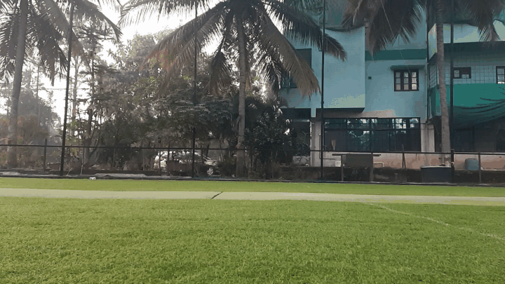

Batting Intelligence
- Ball trajectory and speed
- Bat path and bat speed
- Impact timing and contact zone
- Head movement and stability
- Footwork and stride
- Body pose and balance
- Session consistency
Computer vision for coaches and academies
Gabriella measures batting and bowling in the nets — bat path, ball flight, body position, and timing — so coaches get evidence instead of guesswork, and can track real progress across sessions.
One vision platform. Two perspectives on the game.


One system. Multiple perspectives.
How it works
Purpose-built cricket vision system
Detect player, bat, ball, events
Speed, angles, timing, trajectory
Compare delivery, session, history
Objective evidence for coaches
Compare and track
Every delivery is compared against the player's own history, so coaches see trends across sessions instead of one-off impressions.
Illustrative sample data showing the type of metrics tracked across sessions.
Gabriella Vision
Purpose-built capture enables Gabriella to optimise camera positioning, frame rate, field of view, and calibration — delivering reliable measurement that a phone camera simply cannot match.
Learn about the platformCricket academy pilots
We're piloting Gabriella Vision with academies, coaches, and performance programs. Tell us how you train — we'll map batting and bowling analysis to your workflow.